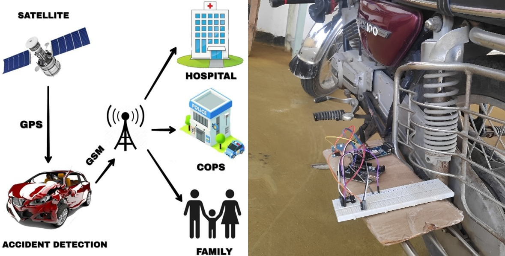
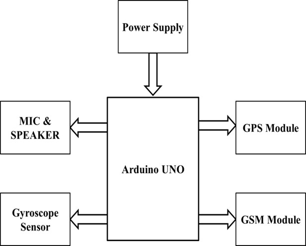
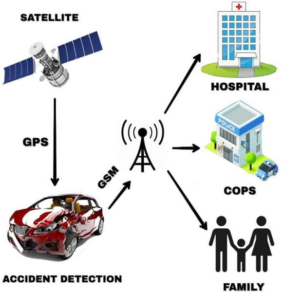
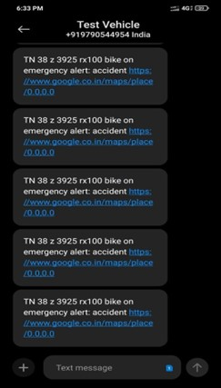

Intelligent Vehicle Accident Detection System
January 2021 - April 2021
Kumaraguru College of Technology, Coimbatore, Tamil Nadu
The Vehicle Tracking System (VTS) enhances security, while the Accident Alert System adds swift accident response. Utilizing GPS, it empowers real-time monitoring and historical tracking. The discreet hardware aids recovery and accident location. This project prioritizes timely alerts, affordability, and accessibility.
Parts list:
Arduino UnoGPS module
GSM module
Gyroscope sensor
Working Methodology
Before delving into the operational procedure, let's gain a quick understanding of the project's flow. Consider an accident scenario where the gyroscopic sensor detects abnormalities promptly. Within seconds, the gyroscopic sensor sends signals to the microcontroller (Arduino in our case). The Arduino waits for the victim to deactivate the device manually, preventing false alarms in non-fatal accidents. This manual intervention window is time-bound. After detecting no user input, the Arduino initiates alerts to pre-programmed numbers. Emergency contacts then receive accurate geographical coordinates, enabling them to notify rescue teams promptly. This approach aims to significantly reduce casualties resulting from road accidents.
Work Flow
Upon an accident, the gyroscopic sensor becomes active. This sensor operates based on the conservation of angular momentum, utilizing a spinning rotor mounted on a gimbal system. Two gimbals are employed to provide the rotor with three degrees of freedom, ensuring it maintains its orientation. Following the gyroscope's input, the GPS sensor engages. GPS receivers, commonly used in smartphones, fleet management systems, and military applications, determine location by receiving signals from a constellation of satellites. Trilateration, involving signalsfrom multiple satellites, calculates accurate user positions in three dimensions (latitude, longitude, and altitude).

The GPS receiver generates NMEA (National Marine Electronics Association) string format output, including parameters like longitude, latitude, altitude, and time. This output, transmitted serially via the Tx pin, serves as valuable location data.
Once precise geographical coordinates are acquired, the GSM module becomes operational. GSM (Global System for Mobile communication) employs hexagonal cells divided across a geographical area. Base stations situated within cells consist of transceivers and antennas.
GSM combines TDMA (Time Division Multiple Access), FDMA (Frequency Division Multiple Access), and frequency hopping. Security features ensure communication
confidentiality and subscriber secrecy. The GSM modem, activated by an SMS command, relays data to the microcontroller. When the "STOP" command is executed, an output at the microcontroller is triggered, disabling the ignition switch. Alerts are sent via telephony servers, covering both voice calls and text messages across different carriers and service providers.
Real Time Results
Successful transmission of emergency alerts via messages, including precise geographical coordinates of the accident location, to the pre-programmed number.
Successful initiation of emergency alerts via phone call, following accurate determination of the accident location, to the pre-programmed number.
Conclusion
In this report, we have presented the prototype of an automatic accident detection system. Looking ahead, this device holds potential for countering vehicle thefts. The remarkable accuracy of the tracking system positions this prototype as a prospective model for identifying individuals involved in criminal activities.
Furthermore, integration with emergency services and collaboration with local governments could expedite rescue operations, ensuring swift response to accident scenes. Our aspiration is to transition this system from prototype to real-world application in the near future.
The proposed accident alert system, as outlined in this report, addresses the critical goal of minimizing fatalities in unavoidable accidents. By immediately alerting emergency responders, the system enhances the chances of timely medical attention and intervention. Particularly valuable in remote and late-night accidents, this invention serves as a lifeline in otherwise perilous situations.
The integration of vehicle tracking and accident alert functionalities is poised to play a significant role in the future's daily lives, contributing to enhanced safety standards and faster emergency response times.
Check out the project and code here GitHub for code.